-
Casual male portraits
collected client works
These portraits outline the subjects in a more subtle, condensed way, different to my usually more intense set-dressing and world-building style.
Reduced elements of storytelling were still used to suggest atmosphere, boiled down for commercial use.
Musicians, artists, actors, public figures.
2022 - ongoing
-
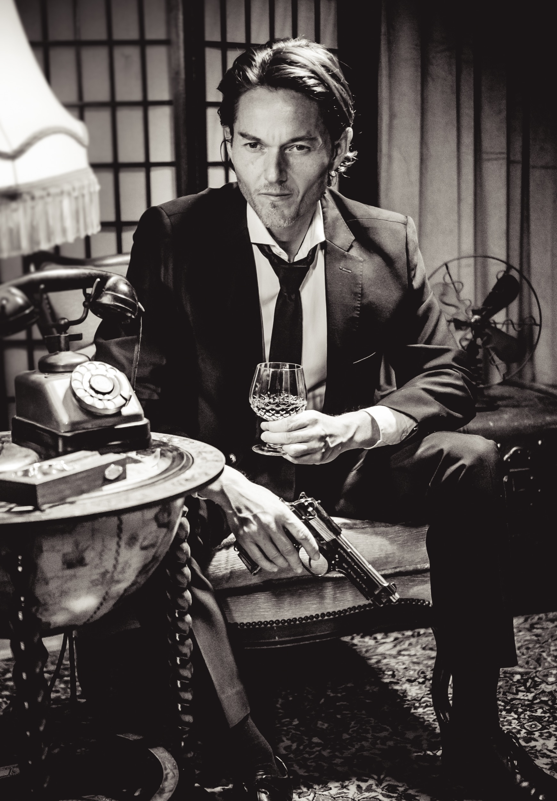
Herbert Rock · actor
-
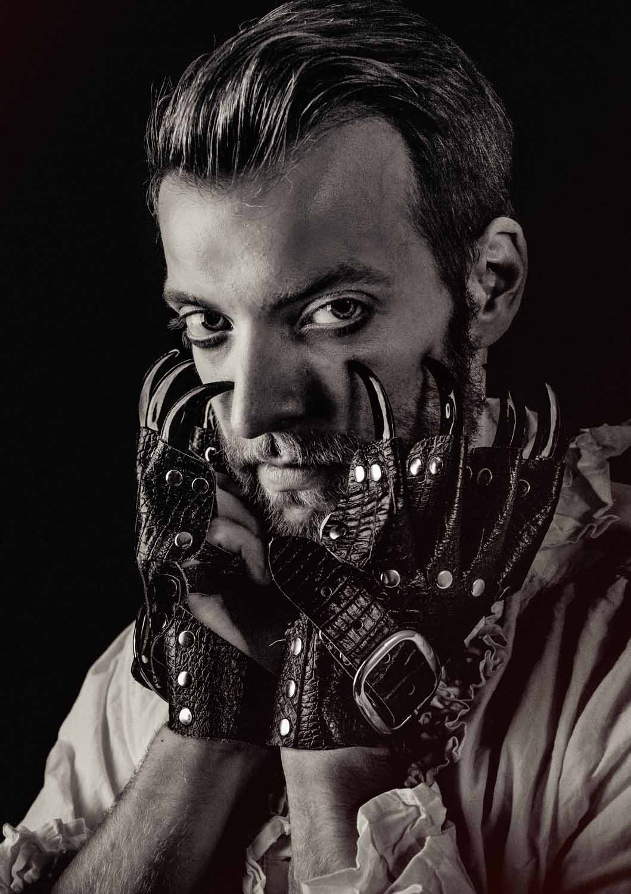
Lucas Melborn · content creator
-
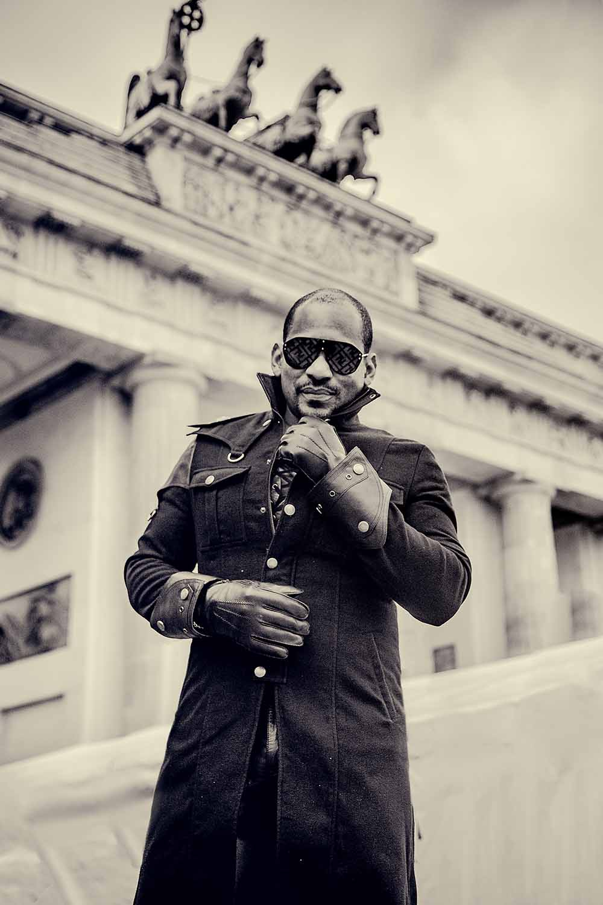
Frank Alberto · artist
-
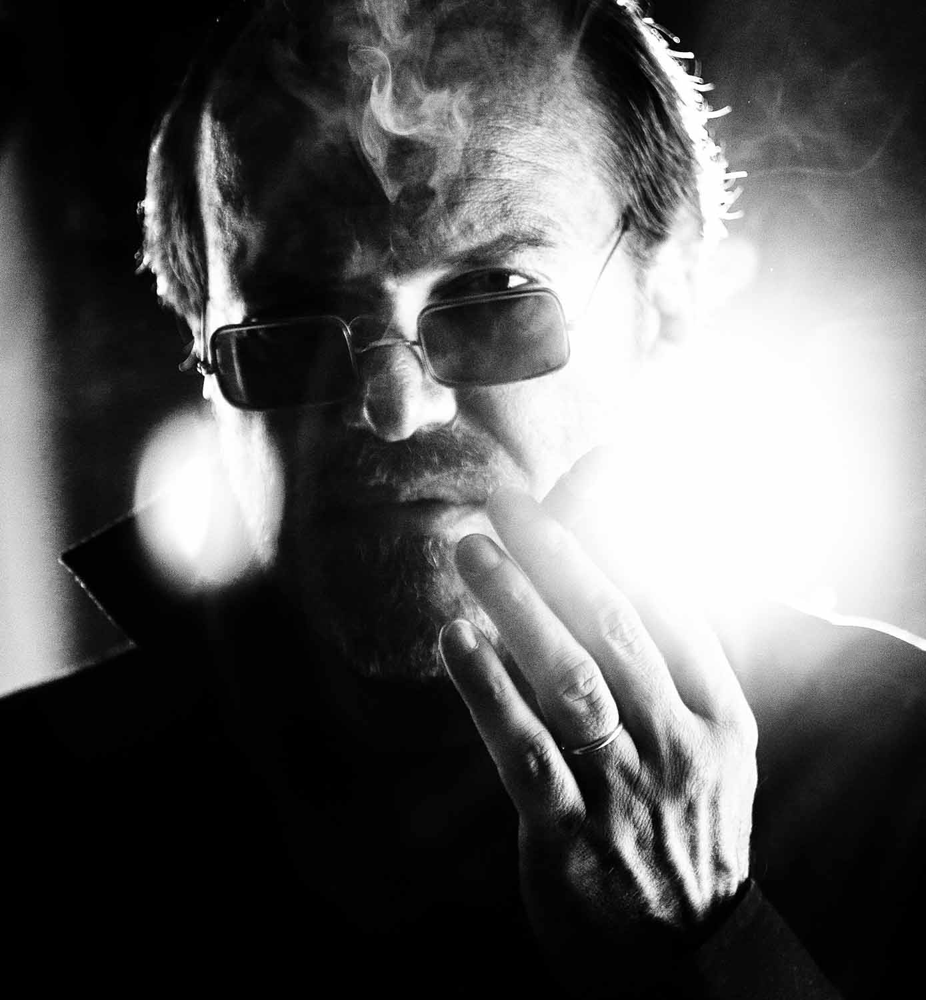
Heiko Triebener · musician
-
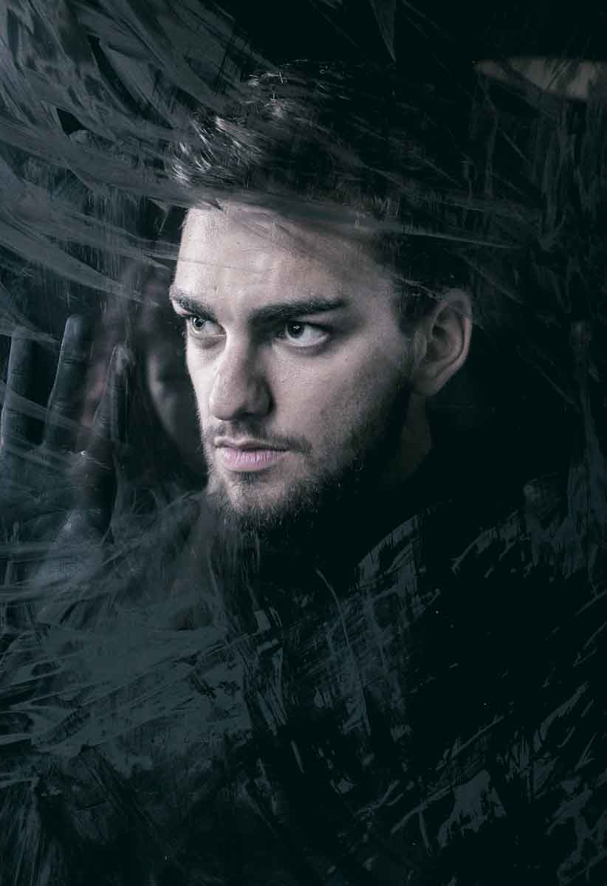
Marcus E. · drummer
-
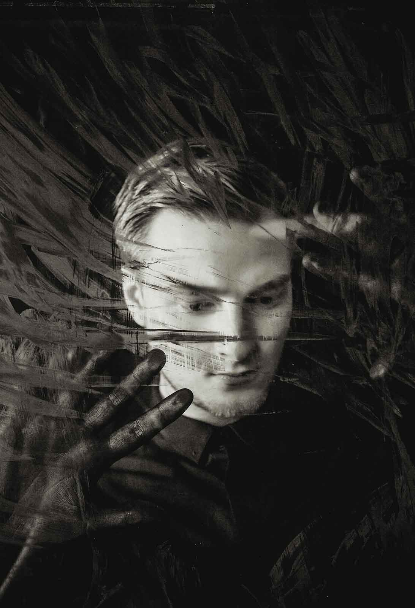
David N. · singer
-
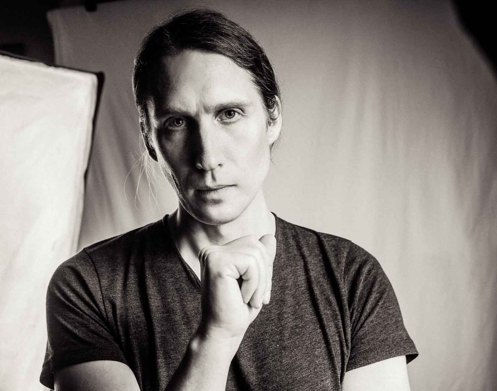
Nils Bandener · software architect
-
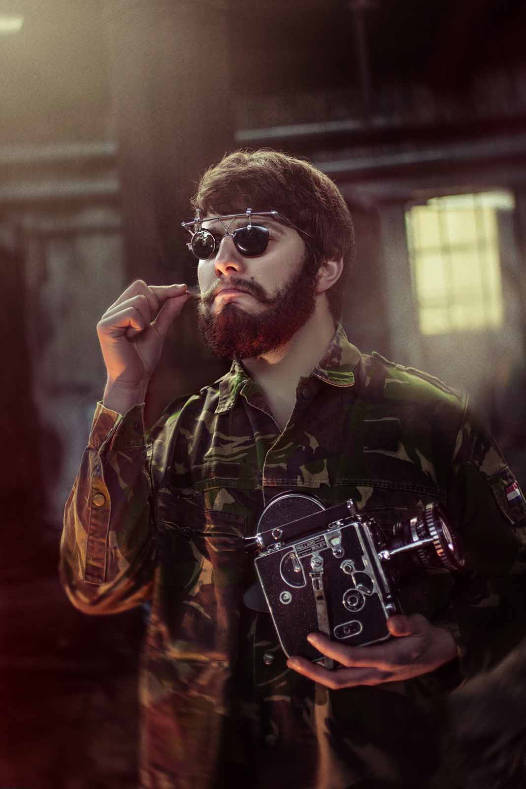
Michel Klares · filmmaker
-
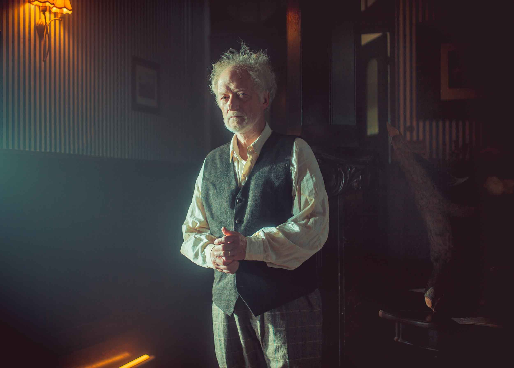
Falk Rockstroh · actor
-
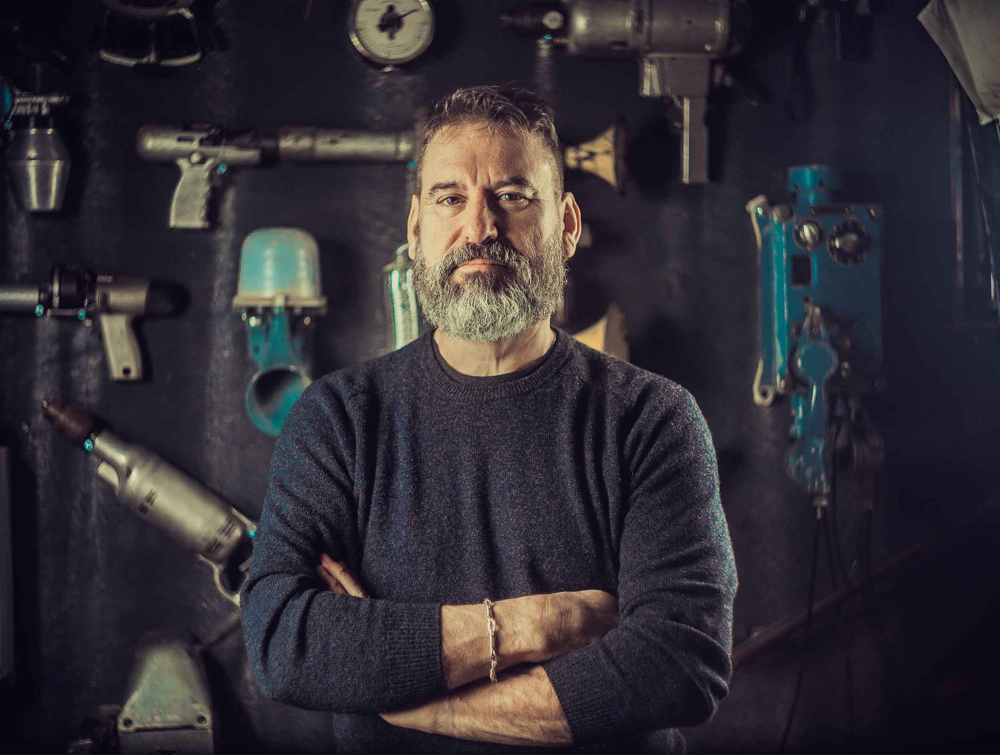
Huberto Mink · local craftsman
-
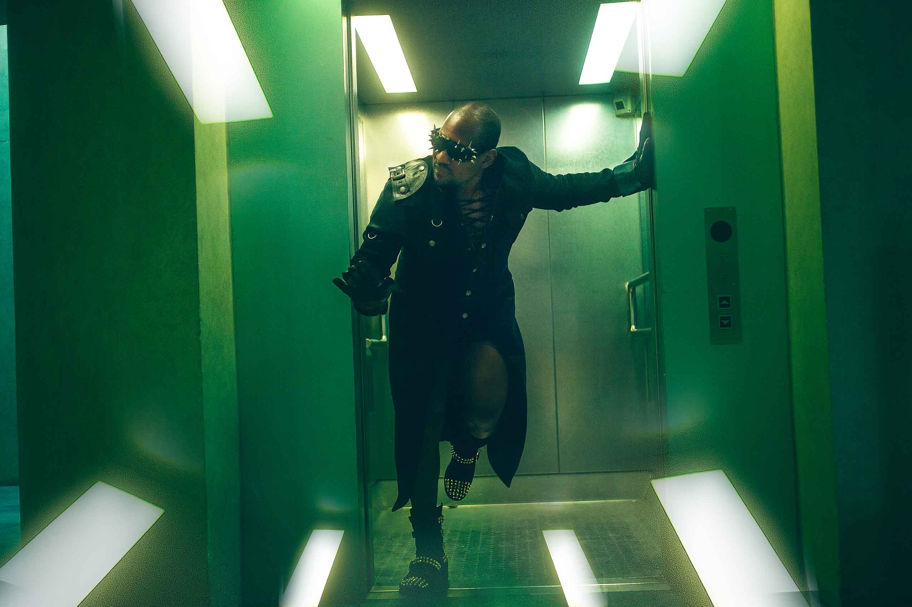
Jason Shane · electronic funk musician
-
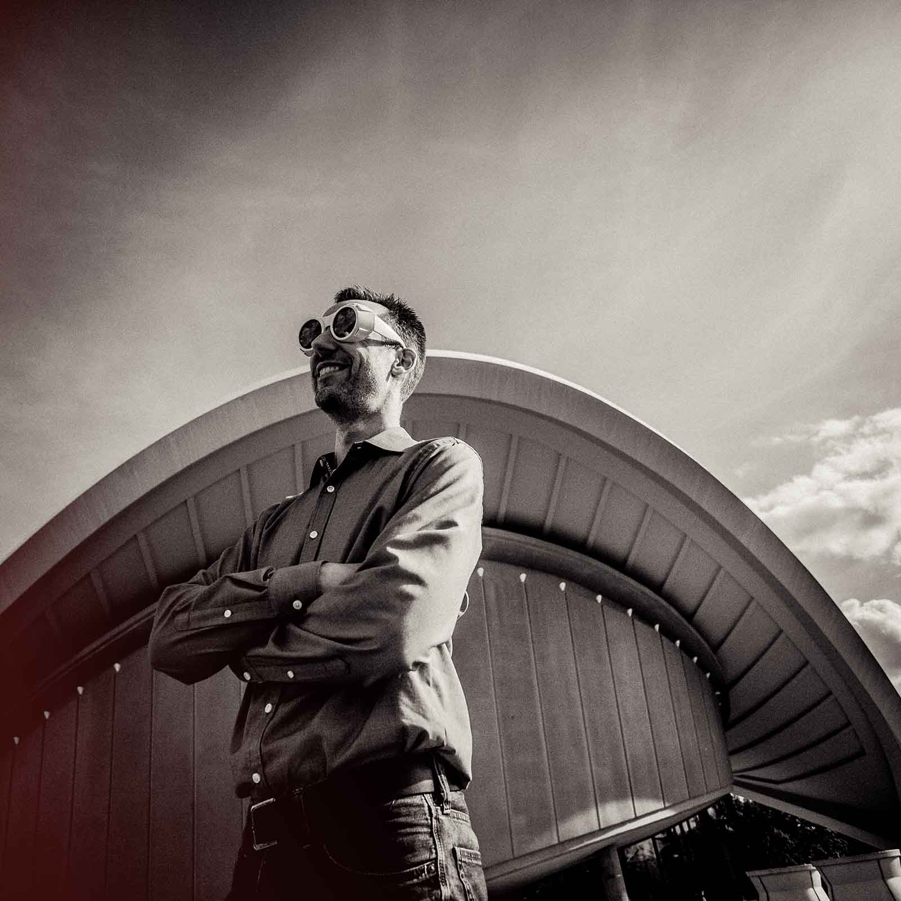
Björn Fihal · architect